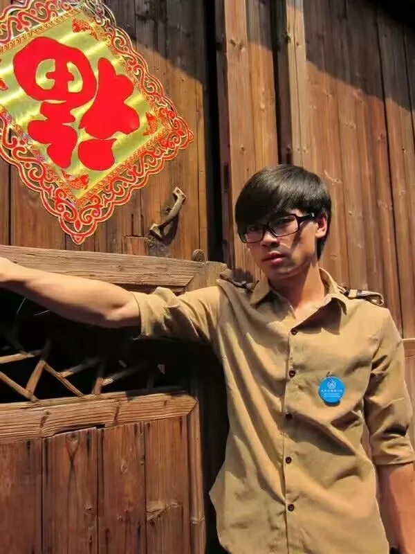
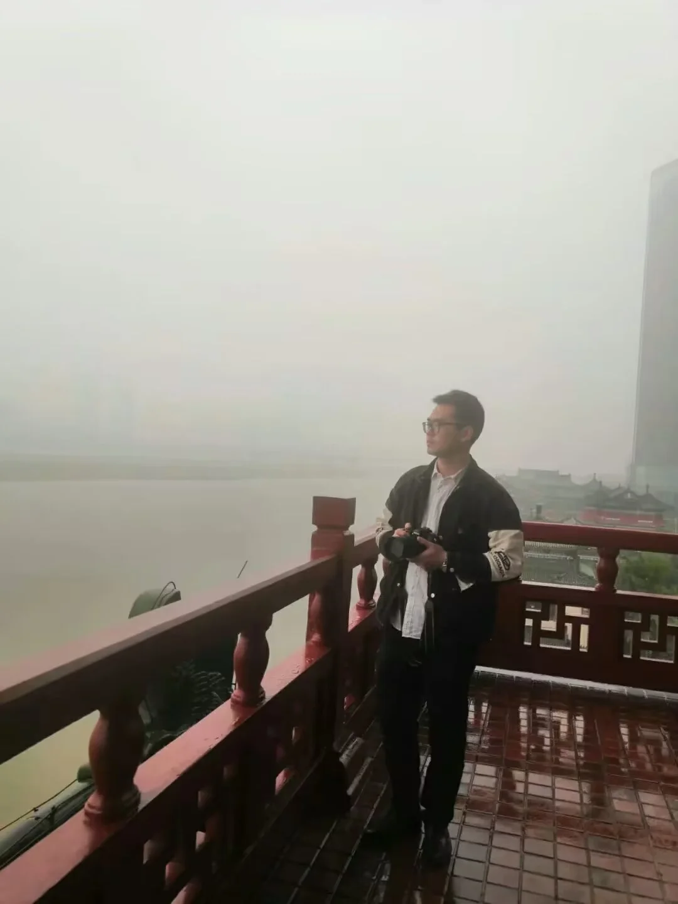
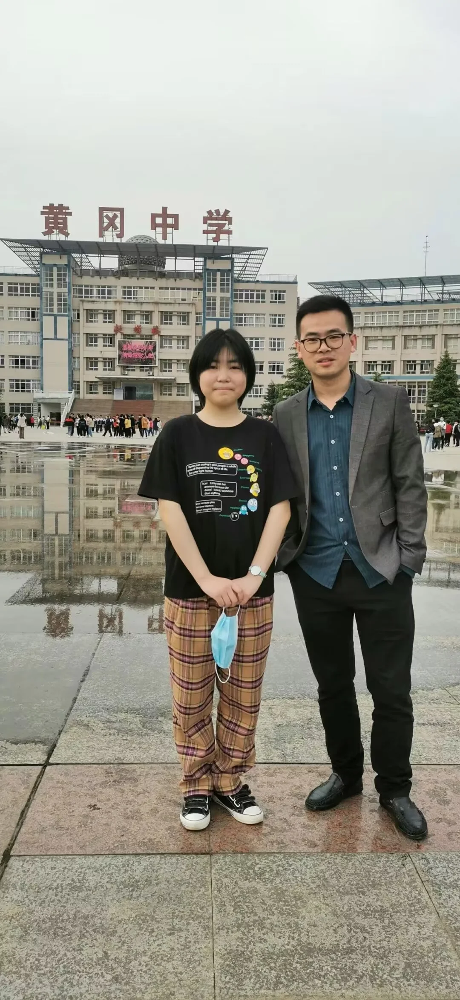
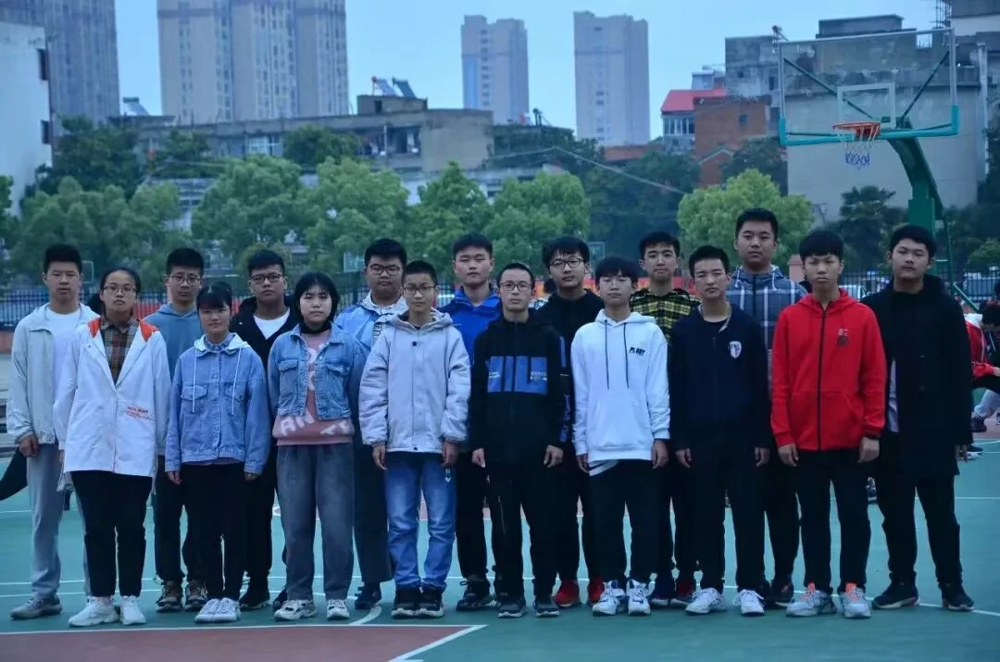

Journal · 2022-07-07
江西省九江市
吾师，余少军。
米苏埃称他「余少」，陈梓铭称他「军哥」。两种称呼指向同一个人，一个偏敬意，一个偏亲昵。这大概就是他在学生心目中的位置——既可以仰望，也可以勾肩搭背。
从青年到中年，他的脸圆了许多。岁月对男人的雕琢有时候就是这样简单粗暴：把棱角磨平，把线条撑圆。但你仔细看他的眼睛，那双眼睛从来没有变过。里面有一种光，一种只属于少年的光。那不是天真，是一种不肯被生活驯服的倔强。
我想，真正的好老师大概就是这样。他未必教出了什么惊天动地的知识，但他往那儿一站，你就觉得，保持一点少年的样子，是可能的。哪怕脸圆了，腰粗了，头发少了——但他依旧是一位少年。




My teacher, Yu Shaojun.
Misue calls him "Yu Shao," Chen Ziming calls him "Jun Bro." Two names for the same person—one leaning toward respect, the other toward intimacy. That's probably exactly where he stands in his students' minds: someone you can look up to, but also throw an arm around.
From youth to middle age, his face has rounded out considerably. That's how time sculpts a man sometimes—simple and blunt: smoothing the edges, rounding the lines. But look closely at his eyes. Those eyes have never changed. There's a light in them, a light that belongs only to a boy. Not naivete, but a stubborn refusal to be tamed by life.
I think that's what a truly great teacher looks like. He may not have imparted earth-shattering knowledge, but just standing there, he makes you feel that keeping a bit of that boyish spirit is possible. Even if the face rounds out, the waist thickens, the hair thins—he is still, always, a boy at heart.
Mon maître, Yu Shaojun.
Misue l'appelle « Yu Shao », Chen Ziming l'appelle « Frère Jun ». Deux noms pour la même personne—l'un penchant vers le respect, l'autre vers l'intimité. C'est sans doute exactement la place qu'il occupe dans l'esprit de ses élèves : quelqu'un qu'on peut admirer, mais aussi prendre par l'épaule.
De la jeunesse à l'âge mûr, son visage s'est bien arrondi. C'est ainsi que le temps sculpte parfois un homme : simplement, brutalement—lissant les angles, arrondissant les traits. Mais regardez bien ses yeux. Ces yeux n'ont jamais changé. Il y a une lumière en eux, une lumière qui n'appartient qu'à un garçon. Pas de la naïveté, mais un refus obstiné de se laisser dompter par la vie.
Je crois que c'est à cela que ressemble un véritable grand professeur. Il n'a peut-être pas transmis de savoir bouleversant, mais rien qu'en se tenant là, il vous fait sentir que garder un peu de cet esprit juvénile est possible. Même si le visage s'arrondit, la taille s'épaissit, les cheveux s'éclaircissent—il est toujours un garçon dans l'âme.
Mein Lehrer, Yu Shaojun.
Misue nennt ihn „Yu Shao", Chen Ziming nennt ihn „Bruder Jun". Zwei Namen für dieselbe Person—der eine eher respektvoll, der andere vertraut. Genau so steht er wohl in den Köpfen seiner Schüler: jemand, zu dem man aufschauen, dem man aber auch den Arm um die Schulter legen kann.
Von der Jugend bis zum mittleren Alter ist sein Gesicht deutlich runder geworden. So formt die Zeit manchmal einen Mann: einfach und grob—die Kanten glätten, die Linien runden. Aber schau genau in seine Augen. Diese Augen haben sich nie verändert. Da ist ein Licht darin, ein Licht, das nur einem Jungen gehört. Keine Naivität, sondern eine sture Weigerung, sich vom Leben zähmen zu lassen.
Ich glaube, so sieht ein wirklich großer Lehrer aus. Er hat vielleicht kein umwälzendes Wissen vermittelt, aber allein dadurch, dass er da steht, gibt er dir das Gefühl, dass es möglich ist, ein Stück dieses jungenhaften Geistes zu bewahren. Auch wenn das Gesicht runder wird, die Taille dicker, die Haare lichter—er ist immer noch ein Junge im Herzen.
日记随笔源文本
吾师，余少军。米苏埃称其“余少”，陈梓铭称其“军哥”。从青年到中年，他的脸圆了许多，但他依旧是一位少年！